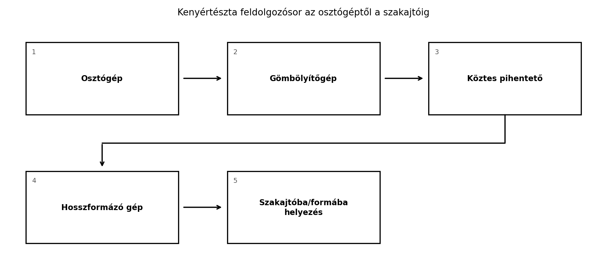

Hajnali kenyérgyártásban az osztógépből kikerülő tésztadarabok sokszor szabálytalan felületűek, sarkosak, és az osztás során a gáz egy része is kiáramlott belőlük. Ha közvetlenül hosszformázásra vagy szakajtóba helyezésre kerülnek, a kész kenyér felülete repedezett, alakhibás lesz. A gömbölyítőgép ezt a felületet rendezi össze: a tésztadarabot gördülő mozgással sima, feszes gömbbé alakítja, közben a gáz egy részét is újra elosztja. A hosszformázó gép a gömbölyített, pihentetett darabot hosszúkás, egyenletes vastagságú formává nyújtja, hogy a szakajtóban vagy formában a megfelelő irányban tudjon tovább kelni. E gépek nélkül nagyobb tételnél a kézi munka nagyon lassú lenne, és a méretingadozás rontaná a sütési egyensúlyt.
Az alábbi folyamatábra azt mutatja, hol helyezkednek el ezek a gépek a kenyértészta feldolgozósorán:

A folyamatábra lényege: az osztás után a tésztadarabnak először feszes, kerek felületet kell kapnia, utána rövid pihenésre van szüksége, és csak ezután alakítható hosszúra biztonságosan. A sorrend felcserélése szakadást, ragadást, egyenetlen bélzetet okozhat.
Definíció. Gömbölyítőgép olyan tésztafeldolgozó gép, amely az osztott tésztadarabot forgó felület segítségével gördülő mozgásra kényszeríti, így sima, feszes, közel gömbalakú bőrt alakít ki rajta.
Definíció. Hosszformázó gép olyan tésztafeldolgozó gép, amely a pihentetett, gömbölyített tésztadarabot hengerek vagy hengerréssel dolgozó egység segítségével hosszúkás, hengeres vagy ovális alakúvá nyújtja.
A két gépet gyakran egymás után, de külön berendezésként használják. A köztes pihentető a gömbölyítő és a hosszformázó közé kerülő, időt és teret biztosító egység.
A kúpos gömbölyítőgép lényege egy függőleges tengelyű, csúcsával felfelé álló, forgó kúp, amely körül egy állítható hézagú, csigavonalú vezetővájat vagy köpeny helyezkedik el. Az osztott tésztadarab a kúp alsó, szélesebb részéhez kerül, a forgó kúp a vájatba kényszeríti, és a darabot a vájat mentén felfelé szállítja. (Létezik fordított, tölcséres kivitel is, amelyben a darab felülről lefelé halad – ellenőrizendő: az üzemi gép gépkönyve.) Közben a darab a kúpfelület és a vájat között gördül, a felülete kisimul, a belső gáz kissé újrarendeződik.
Összefüggés. A kúpos gömbölyítő munkáját a kúp fordulatszáma, a vájat és a kúp közötti rés, valamint a kúp geometriája határozza meg. A rés szűkítése feszesebb bőrt ad, de túl szoros beállításnál a tészta szakad, melegszik vagy a gép betömődik.
A kúpos gépet elsősorban kenyér- és péksüteménytésztákhoz használják. Beállítását úgy ellenőrzik, hogy néhány próbadarabot futtatnak, és megnézik: a tészta felülete sima-e, nem ragad-e a kúphoz, nem szakadt-e meg a darab.
A szalagos gömbölyítőgép több ferde vagy vízszintes, egymásra ható szalag között görgeti a tésztadarabot. Az alsó szalag általában lassabban, a felső gyorsabban vagy ellentétes irányban mozog, így a darabot forgásra, gördülésre kényszeríti. A szalagok közötti távolság és a szalagsebesség-különbség állítja be a formázás erősségét.
A szalagos kivitel kevésbé melegíti a tésztát, és lágyabb tésztáknál is kíméletes. Péksütemény- és finom pékárutésztákhoz gyakori, mert kisebb a felületi sérülés veszélye. A beállítási elv hasonló: akkor jó a rés, ha a tészta gördül, de nem csúszik, nem kenődik szét, és a felülete rövid idő alatt simává válik.
Hiba. A túl nagy rés hatására a tészta nem kap feszes bőrt, a túl kicsi rés hatására a tészta a szalagokra kenődik, a kilépő darab szakadt, ragacsos felületű, és a gép teljesítménye csökken.
Az ábra bal oldala a kúpos gépet mutatja kivágott nézetben (1 forgó kúp, 2 vezetővájat, 3 állítható rés, 4 betáplálás alul, 5 kilépés felül, 6 a darab spirális pályája, 7 védőburkolat), a jobb oldala a szalagos gépet felülnézetben (8 lassabb alsó szalag, 9 gyorsabb felső szalag, 10 szalagtávolság, 11 a gördülő darab). Az alsó sor a rés hatását veti össze.
Mindkét gépnél ugyanaz a szabály: a darabnak gördülnie kell, nem csúsznia. A próbadarabokon a túl nagy rést a ráncos, laza bőr, a túl kicsit a szakadt, kenődött felület árulja el. A HTML-kiadásban a rés csúszkával állítható, és kiemelődik a hozzá tartozó gömb.
A hosszformázó gép lényegében egy hengerpárból vagy több hengerből álló nyújtóegység. A gép fogadja a gömbölyített, pihentetett tésztadarabot, és egy szállítószalag vagy ejtővájat a hengerrés elé irányítja. A hengerpár a tésztát lapos ovális lemezzé nyújtja, majd egy felcsavaró labirintus, nyomólap vagy formázócsatorna hosszúkásra sodorja. A kész hosszformázott darab hengeres, enyhén kúpos, egyenletes átmérőjű.
Beállítási szabály. A hosszformázó beállításakor először a hengerrést állítják a tésztadarab tömegéhez és a kívánt véghosszhoz. A rés csökkentése vékonyabb, hosszabb előlemezt ad; a rés növelése vastagabb, rövidebb lemezt. A nyomólap helyzete a felcsavarás szorosságát szabályozza: ha a nyomólap túl közel van, a tészta túl szoros, felülete repedhet; ha túl távol, a darab laza, kelesztéskor szétterül.
A gép indítása előtt a kezelőnek ellenőriznie kell, hogy a hengerrésben nincs tésztamaradék, idegen tárgy, és a védőburkolat zárt állapotban van. A beállítást csak leállított gépen vagy a gyártó által megengedett, biztonságos kézikerékkel szabad elvégezni.
Biztonsági határ. A hengerrés futó gép mellett tilos kézzel állítani, mert a behúzásveszély súlyos kézsérülést okozhat.
Az ábra a hosszformázó anyagútját mutatja: a darab az 1 bevezető szalagon a 2 hengerpárhoz jut, amely lappá nyújtja (a hengerek előtti 3 behúzási pont sraffozva), a 4 felcsavaró háló feltekeri, az 5 nyomólap alatt hengerré görög, végül a 6 kihordó szalagra kerül. A 7 reteszelt burkolat nyitásakor a gép leáll; a 8 vészleállító leállít, de nem választja le a gépet az energiáról.
A darab alakváltozása (gömb → ovális lap → feltekert henger) a kézi hosszformázás (Alakító műveletek és a pihentetés) gépi megfelelője. Az alsó sor a nyomólap beállításának hatását mutatja; a HTML-kiadásban a hengerrés és a nyomólap állítható, a „burkolat nyitva” jelölésre a gép leáll.
A köztes pihentető a gömbölyítő és a hosszformázó közötti időt biztosítja. Lehet egyszerű szalagos pihentető, amely több szinten lassan mozgó szalagokon viszi a tésztadarabokat, vagy lengő-vályús rendszer, amelyben a darabok meghatározott ideig várakoznak, majd a kilépő nyíláson a hosszformázóra kerülnek. Kis üzemben a pihentetés történhet kelesztőkocsin vagy asztalon is, de a gépsoron a szalagos pihentető folyamatos munkát ad.
Szabály. A pihentetés idejét és hőmérsékletét a tészta keménysége, a liszt minősége, a tésztahőmérséklet és a felhasznált technológia határozza meg. A pihentetőben a tészta felülete beszikkadhat; ez hiba (bőrösödés, a varrat nem záródik), ezért a teret gyakran enyhén párásítják vagy a darabot lefedik, ha szakaszos a munka. A pihentetés jellemző célja: a tésztadarabban az erjedés enyhén tovább haladjon, a sikérváz ellazuljon, hogy a hosszformázás ne szakítsa meg a felületet.
Továbbvitt eredmény. A gömbölyítő, hosszformázó és pihentető működésének, valamint beállítási elvének ismeretét használjuk a Süteménytészta-osztók, formázó- és sodrógépek alfejezetben, mert az ott tárgyalt süteményformázó gépek hengerrés-, kés- és nyomólapbeállításai ugyanazt a tésztamegmunkálási logikát követik, de kisebb tésztadarabokra és lágyabb tésztákra.
1. példa – Gömbölyítő kapacitásának becslése.
Egy osztógép percenként 48 darab 900 g-os kenyértésztát ad ki. A
szalagos gömbölyítő a tésztadarabokat egymás után, becslés szerint
darabonként 1,2 másodperc alatt görgeti meg. Mennyi idő alatt dolgozza
fel egy 240 darabos tétel gömbölyítését?
Adott:
darab,
,
a gép nem áll le közben.
Keresett: teljes idő
másodpercben.
Képlet:
.
Behelyettesítés:
.
Átváltás:
.
Ellenőrzés: a gömbölyítő kapacitása
db/perc, az osztóé 48 db/perc; mivel
,
a gömbölyítő lépést tud tartani az osztóval (a 240 darabos tételt az
osztó 5 perc alatt adja ki, a gömbölyítő 4 perc 48 s alatt dolgozná
fel). ∎
2. példa – Hosszformázó hengerrés hatása a
darabhosszra.
A hosszformázó hengerrése 12 mm-ről 8 mm-re csökkentve vékonyabb,
hosszabb előlemezt ad. A tésztadarab tömege 850 g, a tészta sűrűsége
közel
.
Ha a kinyújtott tészta téglalap szélessége 180 mm, becsüljük meg a lemez
hosszát 8 mm vastagságnál.
Adott:
,
,
szélesség
,
vastagság
.
Keresett: hosszúság
cm-ben.
A tészta térfogata:
.
A téglalap térfogata:
,
ebből
.
Behelyettesítés:
.
Ellenőrzés: a kapott hosszúság kenyér hosszformázott darabnál reális; a
tényleges hossz a felcsavarásnál rövidül, ezért ez csak előlemez-méret.
∎
Cél. A tanuló betanítás után, felügyelettel beindítja, beállítja, üzemelteti és tisztítja a gömbölyítő- és hosszformázó gépet, továbbá megválasztja a pihentető időtartamát.
Eszközök és anyagok. Gömbölyítőgép, hosszformázó gép, pihentető, osztott tésztadarabok, mérleg, stopper, tisztítókefe, élelmiszeripari tisztítószer, tiszta rongy, víz, kézifertőtlenítő, hulladékgyűjtő, dokumentációs lap.
Higiénia. A munka megkezdése előtt ellenőrizd a tiszta munkaruhát, hajhálót, és vedd le az ékszereket. Kezet moss, és fertőtlenítsd. Az eszközök, gépfelületek tiszták legyenek, ne legyen rajtuk rászáradt tészta, lisztpor vagy idegen anyag. Ha a tanuló hasmenéses, hányásos vagy gennyes bőrsérüléssel küzd, élelmiszerrel nem dolgozhat – ezt a munka megkezdésekor jeleznie kell.
Gépbiztonság. A gépet csak betanítás után, felügyelettel szabad kezelni. Üzem előtt végezz gépszemlét: a védőburkolat a helyén van-e, a reteszelés zár-e, a vészleállító elérhető-e, a gép alatt nincs-e sérült vezeték vagy csúszásveszélyes szennyeződés. A beállítást, tisztítást, duguláselhárítást csak leállított, áramtalanított, újraindítás ellen biztosított gépen végezd, miután a forgó részek teljesen megálltak. Futó gépbe nyúlni, a reteszelést áthidalni, a védőburkolatot nyitott állapotban üzemeltetni tilos.
Számozott lépések.
Ellenőrzési pontok. A próbadarabok tömege egyezzen a feladási tömeggel; a gömbölyített darab kerek, sima; a hosszformázott darab egyenletes, nem szakadt, nem ragad; a pihentetőn a darabok nem csúsznak össze, nem száradnak ki.
Tipikus hibák a gyakorlatban. A rés túl szorosra állítása, a próbadarab nélküli indítás, a pihentető idő elhagyása, a gép tisztításának elhalasztása.
Dokumentálás. A gépnaplóba kerüljön a gép azonosítója, az üzemóra vagy a tételszám, a beállítási értékek, az ellenőrzések eredménye és a feltárt eltérés.
A gépek munkájának minőségét a tésztadarabokon érzékszervi és mért jellemzőkkel ellenőrzik.
A gyakori eltérés: a darab felülete szakadt, a hosszformázott darab vége visszahajlik, a pihentetőn a tészták összeérnek, a hosszúság tételen belül ingadozik. Ilyenkor a gép beállítását és a pihentetési időt kell ellenőrizni.
1. feladat (A) – Sorold fel a kúpos gömbölyítőgép fő szerkezeti elemeit, és mondd el, mitől feszes a tésztadarab felülete.
2. feladat (A) – Magyarázd el a hosszformázó gép hengerrésének és nyomólapjának szerepét.
3. feladat (B) – Egy szalagos gömbölyítő 240 darab tésztát dolgoz fel. Ha a gép percenként 30 darabot görget meg, mennyi idő alatt végez? Hány darab marad hátra 4 perc után?
4. feladat (B) – A hosszformázó gép hengerrése 10 mm. A tésztadarab tömege 900 g, sűrűsége , a lemez szélessége 200 mm. Számítsd ki a kinyújtott tészta elméleti hosszát.
5. feladat (C) – A gyártás során a hosszformázott kenyér teteje a kelesztés után repedezett, és a darab szétterül a szakajtóban. A gömbölyítő beállítása jó. Melyik gépet és milyen paramétert érdemes ellenőrizni, és miért?
6. feladat (D) – A tanuló a gyakorlatban a gömbölyítőgépet üres járatás után próbadarabbal akarja beállítani, de a védőburkolat nyitva marad, mert így jobban látja a tésztát. Mi a helyes eljárás? Írd le a gépszemle és a beállítás lépéseit a biztonsági szabályokkal együtt.
1. feladat – A kúpos gömbölyítőgép fő elemei: a forgó kúp, az állítható csigavonalú vezetővájat vagy köpeny, a meghajtás, a védőburkolat, a vészleállító. A feszes felület attól alakul ki, hogy a tészta a kúp és a vájat között gördül, közben a felülete kisimul, a belső gáz újrarendeződik, és a megfeszített bőr tartja a darabot.
2. feladat – A hengerrés a tésztadarabot előlemezzé nyújtja; minél kisebb a rés, annál vékonyabb és hosszabb a lemez. A nyomólap a felcsavarás szorosságát szabályozza; közelebb állítva szorosabb, távolabb állítva lazább a hosszformázott darab. A kettő együttesen határozza meg a véghosszt és a felületi feszességet.
3. feladat –
Adott:
darab, teljesítmény
.
Keresett: teljes idő
.
Képlet:
.
Behelyettesítés:
.
4 perc után a gép
darabot dolgoz fel, tehát
darab marad hátra.
Ellenőrzés: félidőben a darabok fele kész, ez jó. ∎
4. feladat –
Adott:
,
,
szélesség
,
vastagság
.
Keresett: hossz
.
Térfogat:
.
Képlet:
.
Behelyettesítés:
.
Ellenőrzés: 900 g tésztánál, 1 cm vastagságnál a 43 cm hosszú lemez
reális; a hosszformázás után a felcsavarás miatt rövidül. ∎
5. feladat – A gömbölyítő jó, tehát a hiba a hosszformázó beállításában vagy a pihentetőben keresendő. Ha a darab szétterül és a felülete repedezett, a hosszformázás túl laza vagy túl szoros lehet; a legvalószínűbb, hogy a nyomólap túl távol van, így a darab nem elég szoros, vagy a hengerrés túl nagy, és a lemez vastag marad. Ellenőrizni kell a hosszformázó nyomólapját és hengerrését, próbadarabot kell futtatni, és a pihentetési időt is érdemes megnézni, hogy a tészta ne legyen túl lágy.
6. feladat – A helyes eljárás: először gépszemle: a védőburkolatnak zártnak kell lennie, a reteszelésnek működnie kell, a vészleállító elérhető. A védőburkolatot nem szabad nyitva hagyni. A gépet üres járatban kell kipróbálni, majd leállítás után beállítani a rést a gyártói utasítás szerint. Próbadarabot csak zárt burkolattal, a gép adagoló nyílásán keresztül szabad behelyezni, kesztyű nélkül, mert a kesztyű behúzásveszélyt jelent. Ha a védőburkolatot bármilyen okból nyitni kell, a gépet le kell állítani, áramtalanítani, és megvárni a forgó rész megállását.
A gömbölyítőgép az osztott tésztadarab felületét gördülő mozgással simává, feszessé teszi. A kúpos gép a forgó kúp és a vezetővájat között görgeti a tésztát; a szalagos gép két vagy több, egymáshoz képest eltérő sebességű szalag között. A hosszformázó gép a pihentetett darabot először hengerrésen át lemezzé nyújtja, majd nyomólappal vagy formázócsatornával hosszúkásra sodorja. A köztes pihentető a gömbölyített tészta sikérvázát ellazítja, így a hosszformázás kisebb szakadási kockázattal végezhető. A beállítás során a rés és a nyomólap határozza meg a tészta feszességét, hosszát és felületi minőségét. A gép biztonságos kezelése betanítást és felügyeletet igényel; beállítani, tisztítani csak leállított, áramtalanított, újraindítás ellen biztosított gépen szabad, a forgó részek megállása után. Futó gépbe nyúlni, a védőburkolatot nyitva hagyni, a reteszelést áthidalni tilos. A pihentető paramétereit a tészta keménységéhez és a technológiai laphoz kell igazítani, stopperrel ellenőrizve. Továbbvitt eredmény: a gömbölyítő, pihentető és hosszformázó működési elve és beállítási logikája a Süteménytészta-osztók, formázó- és sodrógépek alfejezetben tér vissza, ahol kisebb, lágyabb tésztadarabokhoz használt süteményformázó gépeket tárgyaljuk.
A leírt gépbiztonsági alapelvek a gépekre vonatkozó uniós szabályozáson és a munkavédelemről szóló törvényen alapulnak, de a konkrét rendeletszámot, szabványszámot és a hatályos gépbiztonsági követelményeket kiadás előtt ellenőrizni kell. A gyakorlati útmutatóban megadott pihentetési idők, hengerrés-értékek, teljesítményadatok és sűrűségértékek tanulási példák, amelyek terméktől, liszttől, tésztától és géptől függenek; az üzemi technológiai lap, a gépkönyv és a gyártói adatlap az irányadó.